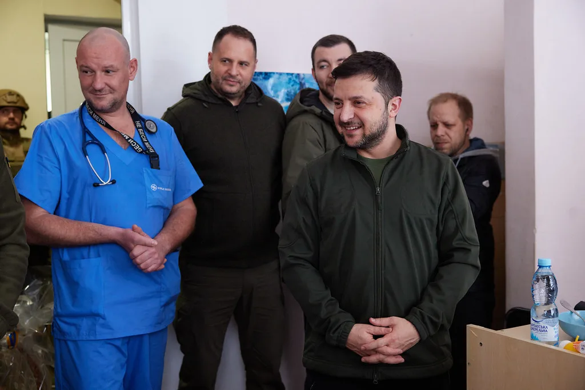
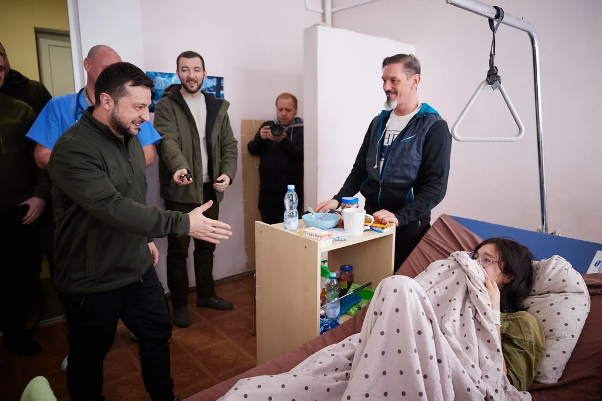

미국과 러시아, 우크라이나가 아랍에미리트(UAE) 아부다비에서 이틀간 진행한 3자 종전 협상이 11일(현지시간) 마무리됐다. 세 나라 대표단이 한자리에 앉은 것은 약 9개월 만이다. 양측은 개전 이후 가장 큰 규모가 될 포로 교환에 뜻을 모았지만, 전쟁을 끝내기 위한 핵심 쟁점인 영토와 안전보장 문제에서는 간극을 좁히지 못한 것으로 전해졌다.
가장 눈에 띄는 성과는 포로 교환이다. 러시아 측 대표인 블라디미르 메딘스키는 포로 교환이 '원칙적으로' 합의됐다고 설명했다. 러시아 측에 따르면 구체적인 인원은 아직 확정되지 않았으나 1000명 이상이 될 것으로 기대되며, 교환은 2~3주에 걸쳐 나눠 진행될 계획이다. 일부 외신은 양측이 최대 1500명씩 교환하는 방안을 추진하기로 했다고 보도해, 규모에 대한 전언은 다소 엇갈린다.

미국 측 특사로 참여한 재러드 쿠슈너는 정확한 교환 규모가 12일 최종 확정될 예정이라고 밝혔다. 아직 숫자가 정해지지 않은 만큼 실제 이행까지는 명단 확인과 이송 경로 조율 같은 실무 절차가 남아 있다. 그동안 양국은 전투가 계속되는 가운데서도 중재국을 통해 포로를 여러 차례 맞바꿔 왔다. 포로 교환은 정치적 부담이 상대적으로 적고 양쪽 모두 자국 여론에 내놓을 성과가 되기 때문에, 협상이 막힐 때마다 가장 먼저 합의되는 의제로 꼽혀 왔다.
반면 영토 문제에서는 기존 입장이 그대로 맞섰다. 러시아는 돈바스 지역 전체를 넘겨받아야 한다고 요구했고, 우크라이나는 지금의 전선을 그대로 둔 채 먼저 휴전해야 한다는 입장을 고수한 것으로 알려졌다. 우크라이나가 요구해 온 전후 안전보장 방안도 구체적인 결론에 이르지 못했다. 미국 측 특사는 회담 뒤 양측 사이에 신뢰가 부족하다는 취지로 평가했다. 돈바스는 우크라이나 동부의 도네츠크와 루한스크를 아우르는 지역으로, 전쟁 초기부터 가장 치열한 격전지였다. 어느 쪽도 이곳에서 물러서기 어려운 만큼 영토 문제는 협상 전체의 최대 난제로 남아 있다.

회담을 바라보는 온도 차도 있다. 볼로디미르 젤렌스키 우크라이나 대통령은 첫날 협상을 두고 건설적이었다고 평가하며 포로 교환과 안보 문제가 논의됐다고 전했다. 그러나 회담이 끝난 뒤 다수 매체는 포로 교환 외에는 뚜렷한 진전이 없었다는 점을 들어 종전을 향한 돌파구가 마련되지 못했다고 평가했다. 대화의 틀이 다시 가동됐다는 점과, 정작 핵심 의제는 제자리라는 점이 함께 확인된 셈이다.
외교 일정은 곧바로 이어진다. 쿠슈너와 스티브 위트코프 등 미국 특사단은 12일 모스크바에서 블라디미르 푸틴 러시아 대통령을 만난 뒤, 아일랜드 더블린으로 이동해 젤렌스키 대통령과 회담할 예정이다. 미국이 양측 정상을 차례로 접촉하는 방식으로 중재를 이어가는 것이어서, 아부다비에서 좁히지 못한 영토 문제에 대해 새로운 절충안이 제시될지가 관심사다.
2022년 2월 시작된 전쟁은 4년 가까이 이어지고 있다. 이번 합의가 예정대로 이행되면 양측 포로와 그 가족에게는 의미 있는 인도적 진전이 된다. 다만 포로 교환이 곧 휴전으로 이어진다고 보기는 이르다. 향후 관건은 12일 확정될 교환 규모와 실제 이행 여부, 그리고 미국 특사단의 연쇄 회담에서 영토·안보 문제의 접점이 만들어지느냐에 달려 있다.